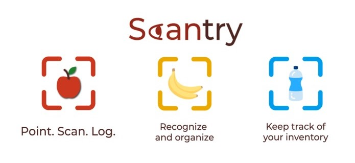

Scantry - EC Hacks 2019
Developed a mobile app that allows a user to scan various foods and store them in a digital pantry that also allows direct access without the use of Wi-Fi. As a group, we used multiple skills and tools such as the Clarifai API, JavaScript, Node.js, Web Design (HTML & CSS), and Android Development!
For my part, I helped implement the Clarifai API into our code using JavaScript and obtaining data for Firebase to store. Although it was nowhere as good as the "Hotdog/Not Hotdog" app in the show Silicon Valley, I learned a lot from this hackathon project alone.